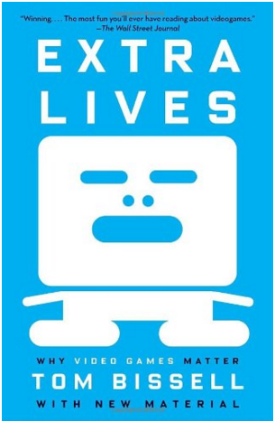

NetCity 3D is a video game being created for the Spring 2016 CS426 Senior Project course at the University of Nevada, Reno. Networking Simulator is a program intended to teach students about networking. The following were used as refrences for the project.
How to Design an Educational Game.
This article was published by Knewton on their website. It breaks down the
design of an educational game into parts to have a successful fun game while
at the same time making it educational. This is beneficial to our group as we
are also trying to make an educational game while also teaching the user the
basics of networks
www.knewton.com
Unity vs. Unreal.
For our project we chose Unity as our desired game engine. Essentially the
article that we listed demonstrates the differences between Unity and Unreal
in terms of programming, the cost of each and how much developers earn and of
course the last portion which compares the assets that are offered within different
engines.
www.stfalcon.com
Maya vs. Blender.
For our project we have to choose a program to do our models and animations
because we would like to use our own rather than just buy the assets on line.
This article demonstrates the advantages between two big modeling programs,
Blender and Maya. We made a decision to use Blender as our modeling engine.
www.digitaltutors.com
Network Security.
For our project we needed to teach the users the fundamentals of networking
security without going into the jargon. So this journal describes the basics
of network security and then goes deeper into describing the different sort of
attacks. For example, we are incorporating passive attacks by sending a package
which will appear as a car in which the users data will be stolen unless they
detect it otherwise in which it will be explained what type of security attack
it is.
www.sciencedirect.com
Extra Lives: Why Video Games Matter by Tom Bissell
This is a book about the videogames, on how they have developed over the last
decade and why they are so important.
